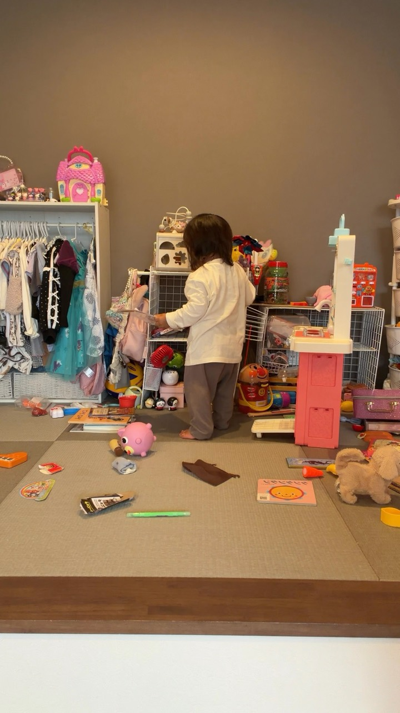
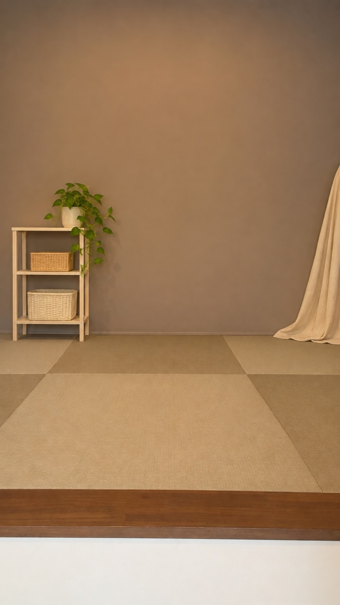

1
STEP 1
同じ画角で2つの素材を撮る
A 背景だけ動画で数秒撮影
B 自分の動画同じ位置で撮影
Aを一時停止してスクショ。この画像を背景作りに使います。
動画モードのまま撮る写真モードへ切り替えると、写る範囲が変わる場合があります。固定台・向き・明るさをそろえましょう。
最初は5〜10秒。明るい場所で、壁と違う色の服を選び、ゆっくり動くと切り抜きやすくなります。
片付ける時間がなくても、リールは作れる。
AI×SNSで在宅収入を叶える主婦
みな @mina_ai_fukugyo
こんな気持ち、ありませんか？
おもちゃが散らかっていて、撮影を後回しにしてしまう。
おしゃれな部屋じゃないから、リールに自信が持てない。
顔も部屋も見せずに、発信を続けたい。

専業主婦の頃、自分の買い物を夫に相談するのが苦手でした。
物販やハンドメイドも試したけれど、思うようにいかず。転機になったのがAIでした。
最初は子育ての相談から。少しずつ仕事に取り入れ、今はAIを使った在宅ワークで月30万円ほどの収入につながっています。
だからこのガイドは、
「難しいことは苦手。でも一歩進みたい」
というママのために作りました。
※誰でも簡単に収益が出るという内容ではありません。成果にはリサーチ・改善・継続が必要です。
自分で自由に使えるお金も増やしたいママへ

何を選び、どうAIに頼み、SNSから収益につなげるか。迷いやすい順番を1冊にまとめた『AIマネタイズの教科書』をお届けします。
教科書の中身を少しだけご紹介！
第1章｜今、始めやすいAIマネタイズの選び方
時間・得意・初期費用から、自分に合う入口を整理
第2章｜ChatGPT収益化プロンプト集
アイデア出しから発信まで、迷った時に使える
第3章｜AIマネタイズ実践テンプレート
考える順番を型にして、今日やることを見える化
第4章｜収益化に役立つ生成AIツール3選
初心者が使い分けで迷わないための比較つき
第5章｜AI×SNSで収益につながったリアル事例
遠回りした経験も含め、行動の流れを具体的に紹介
登録後に分かること
「私なら何から始める？」を考えられるように、初心者向けの順番でご案内します。AIに詳しくなくても大丈夫です。
画像をタップするとLINE登録ページが開きます。配布内容や期間は予告なく変更・終了する場合があります。
スマホで進める
3つの役割を分けるだけ
📱
あなた
素材を撮る🎨
ChatGPT
背景を整える🎬
CapCut
動画に重ねる用意するもの
スマホ・固定台・画像生成が使えるChatGPT・自動切り抜きが使えるCapCut
機能や回数には制限があります。有料表示が出たら、料金を確認してから進めましょう。
STEP 1
Aを一時停止してスクショ。この画像を背景作りに使います。
最初は5〜10秒。明るい場所で、壁と違う色の服を選び、ゆっくり動くと切り抜きやすくなります。
STEP 2
仕組みを伝える図解です。操作画面や実際の生成結果とは異なります。
ChatGPTにAのスクショを添付。指示文を送って画像を作り、完成画像を端末に保存します。
この画像を、人物動画の後ろに置く背景素材に編集してください。 【残すもの】 元の画角、床と壁の境目、窓とドアの位置、遠近感。元画像と同じ縦横比にする。 【変えるもの】 床の玩具・衣類・雑多な小物を除き、生成りと淡い木目の家具で整える。植物は奥に小さく1つ。手前と中央は人物を重ねるので空けておく。 【仕上げ】 光の方向は元画像に合わせた自然な室内写真にする。人、文字、ロゴは加えない。部屋の広さや天井の高さを変えない。
添付1は撮影場所、添付2は内装の参考です。完成画像の土台は添付1にしてください。 添付1の部屋の形・窓・ドア・撮影方向・縦横比を保ち、家具の素材と色の組み合わせだけ添付2をヒントに整えてください。 添付2の部屋をそのまま再現せず、文字や作品、特徴的な装飾は写し込まないでください。人は置かず、中央と手前を空けます。
韓国風
白い曲線家具と淡いピンクの小物を、壁際に少しだけ。床は明るく、余白のある部屋に。
この画像を、人物動画の後ろに置く背景素材に編集してください。 【残すもの】 元の画角、床と壁の境目、窓とドアの位置、遠近感。元画像と同じ縦横比にする。 【変えるもの】 床の玩具・衣類・雑多な小物を除く。白い曲線家具と淡いピンクの小物を、壁際に少しだけ。床は明るく、余白のある部屋に。 人物を重ねるので、手前と中央は何も置かない。 【仕上げ】 光の方向は元画像に合わせた自然な室内写真にする。人、文字、ロゴは加えない。部屋の広さや天井の高さを変えない。

元の画像
AIで整えた背景実際のお部屋を使った作例です。生成結果は指示や画像によって変わります。
STEP 3
仕組みを伝える図解です。操作画面や実際の生成結果とは異なります。
項目名や利用条件は、アプリのバージョンで異なります。
起きたことを選んで、ChatGPTへ追加で送ってください。
添付した元画像を再確認し、窓とドアの位置を元どおりにしてください。家具の装飾だけ変更し、壁の形は固定してください。
広角効果と奥行きの誇張をなくしてください。床と壁の境界、天井の高さ、壁どうしの距離を元画像に合わせてください。
床や椅子に残った玩具・衣類・袋だけ取り除いてください。新しい家具を増やさず、空いた床を自然に補ってください。
人物動画のスクショも添付します。人物を変更せず、背景側の明るさ・色温度・光の向きをこの動画に近づけてください。
できるようになった、その先に。
ひとつ、思い浮かべてみてね。
撮影の準備を軽くして、大切にしたい時間を少しずつ。
映り込み・窓の景色・郵便物・音声を確認。背景を変えても、身元が特定されない保証はありません。素材は自分のものか、許可されたものを使いましょう。
商品や体験の紹介では、事実や商品の見た目を変えないこと。各サービスの利用条件と、必要なAI表示も確認してください。
ChatGPT公式 ／ CapCutの重ね方 ／ 背景削除
2026年11月確認。
無料オープンチャット
「みな AI×SNS活用術」
AIの活用方法やSNSへの取り入れ方について、私が実際に試して分かったことを発信しています。
オプチャで発信する内容
✓AIの具体的な活用方法
✓SNSに活かすための考え方や工夫
✓実際に試して分かったこと・失敗談
✓最新情報や日々の気づき
Instagramの投稿だけでは伝えきれない、
もう少し詳しい内容も発信しています。
AI×SNSの情報を受け取りたい人は

画像をタップするとオープンチャットの参加ページが開きます。